![IM]()
AUTOMATIZACIÓN INDUSTRIAL (0572)
Objetivo(s) del curso:
El alumno diseñará procesos industriales automatizados mediante el uso de sensores, actuadores, controladores lógicos programables (PLC) y/o neumática.
1. Fundamentos de automatización.
1.1 Conceptos básicos: definición de automatización, elementos para automatizar, control de lazo abierto, control de lazo cerrado, control on-off, control PID, control basado en tiempos, control basado en eventos, criterios para automatizar.
SISTEMAS AUTOMÁTICOS INDUSTRIALES
La Automatización se define como la tecnología que aplica sistemas mecánicos, electrónicos y computacionales en procesos industriales.
Esto incluye herramientas como robots industriales, maquinaria de inspección automática y sistemas de control de calidad. Su objetivo es garantizar resultados consistentes en las variables controladas, incluso dentro de márgenes de error aceptables.
Un sistema automático industrial combina dispositivos eléctricos, mecánicos y electrónicos interconectados, cuyo propósito principal es producir un resultado consistente y predecible en procesos industriales.
Esto puede ser dentro de márgenes de error aceptables o en situaciones más críticas, donde la operación debe ser precisa y sin errores.
OBJETIVOS DE LA AUTOMATIZACIÓN
La Automatización Industrial es el conjunto de tecnologías orientadas a operar total o parcialmente un proceso de producción mediante sistemas automáticos. Estos sistemas pueden basarse en mecanismos mecánicos, eléctricos y computacionales que ejecutan tareas de forma continua, eficiente y segura, minimizando la necesidad de intervención humana.
· Aumentar la productividad.
· Mejorar la calidad del producto.
· Reducir los costos operativos.
· Eliminar errores humanos.
· Asegurar la repetibilidad del proceso.
· Permitir condiciones de operación seguras y estables.
ELEMENTOS PARA AUTOMATIZAR
Los sistemas automáticos industriales están compuestos por dispositivos eléctricos, mecánicos y electrónicos que se interconectan para controlar un proceso y obtener resultados repetitivos.
Sensores: Son dispositivos encargados de detectar variables del entorno o del proceso, como temperatura, presión, presencia, posición o velocidad. Su función principal es brindar retroalimentación al sistema de control sobre el estado actual del proceso. Existen sensores de contacto y sin contacto, según la naturaleza de la medición. (Entradas)
Actuadores: Transforman señales eléctricas, neumáticas o hidráulicas en movimiento físico. Son los elementos que interactúan directamente con el proceso, como motores, válvulas, cilindros, relés, entre otros. Ejecutan las órdenes enviadas por el sistema de control. (Salidas)
Controladores (PLC): Dispositivos encargados de tomar decisiones lógicas en base a la información recibida por los sensores y una programación previa. El más común en la industria es el PLC (Controlador Lógico Programable). También existen sistemas de control basados en microcontroladores, controladores industriales, SCADA, entre otros.
Un PLC (Programmable Logic Controller) está compuesto por circuitos electrónicos de estado sólido, diseñados para tomar decisiones y proporcionar señales de salida, también conocidas como Salidas De Control.
Ejemplos de tecnologías utilizadas incluyen:
· Máquina-herramientas automáticas para procesar partes metálicas.
· Robots industriales.
· Sistemas de inspección automáticos para control de calidad.
· Maquinaria para procesos industriales.
Para construir un sistema automatizado, se requiere:
Ø Dispositivos eléctricos: Estos componentes controlan y distribuyen la energía eléctrica necesaria para operar sistemas automatizados.
Ø Componentes mecánicos: Son fundamentales para transmitir fuerzas, movimientos o realizar operaciones específicas, como las prensas hidráulicas o neumáticas.
Ø Sistemas electrónicos: Incluyen sensores, PLC (Controladores Lógicos Programables) y otros dispositivos que permiten la toma de decisiones y el monitoreo en tiempo real.
CONTROL DE LAZO ABIERTO Y LAZO CERRADO
De acuerdo con la conexión de los dispositivos del sistema automático industrial, existen dos tipos de lazos de control: lazo abierto y lazo cerrado, cada uno con su campo de aplicación.
Control de lazo abierto discreto
En sistemas de lazo abierto, no se realiza medición de la variable controlada, y suelen basarse en el tiempo o el conteo. Son sencillos, económicos y controlados empíricamente.
Por ejemplo, en este sistema, el funcionamiento de un temporizador que activa un dispositivo por un tiempo específico. (Horno de microondas, Lavadora de ropa, Lavavajillas, Tostadora de pan)
La principal característica es la simplicidad, ya que no requiere sensores ni sistemas de retroalimentación, lo que lo hace económico y de fácil implementación.
Sin embargo, su precisión depende de parámetros preestablecidos y no considera posibles variaciones externas.
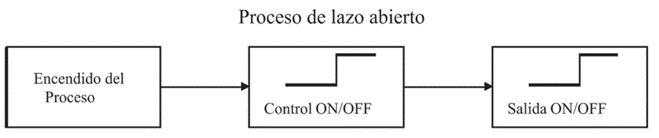
Características
· Sencillos y de fácil concepto
· No se pueden asegurar su estabilidad
· La salida no se compara con la entrada
· Altamente afectados por perturbaciones
· La precisión depende de su calibración
Control de lazo cerrado discreto
En este tipo de control, se mide y retroalimenta la variable controlada, permitiendo ajustes precisos. Factores como el dispositivo de retroalimentación y el algoritmo de control afectan su precisión.
El controlador actúa sobre el proceso de manera dinámica, ajustando las entradas con base en el error detectado, es decir, la diferencia entre la salida real y la deseada.
Por ejemplo, un sistema que controla la temperatura en un horno ajustando la calefacción en función de un sensor de temperatura.
Este tipo de control es más complejo, pero su precisión y capacidad de respuesta ante cambios lo hacen esencial en aplicaciones críticas.
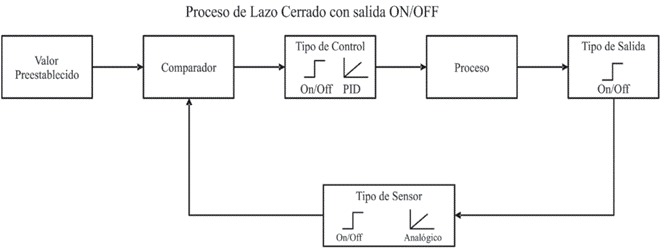
Control de lazo cerrado analógico
Un sistema en lazo cerrado con salida analógica es más preciso, debido a que tenderá a un error mínimo de la variable controlada. El control PID, está compuesto por un control proporcional, integral y derivativo.
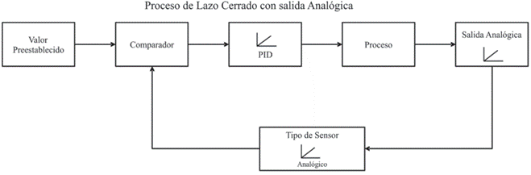
Características
· Complejos, amplia cantidad de parámetros para diseñar
· Propiedad de realimentación
· La salida se compara con la entrada
· Mayor estabilidad ante perturbaciones
· Aplicación en procesos que no pueden ser regulados fácilmente por el hombre
TIPOS DE CONTROLADORES
Control ON-OFF
Activa o desactiva un actuador según si la variable está dentro de un rango predefinido. Se basa en activar o desactivar el sistema cuando la variable medida excede un rango predefinido.
Aunque sencillo, puede provocar desgaste en el actuador si la frecuencia de cambio es alta.
Es uno de los métodos más simples de control en lazo cerrado. Activa o desactiva un dispositivo cuando la variable de proceso cruza un límite predefinido.
Aunque eficiente para sistemas sencillos, su desventaja es el desgaste por la frecuencia de activación/desactivación, especialmente en sistemas de alta velocidad o con variaciones rápidas.
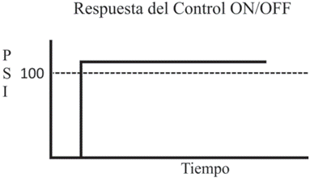
Características
· Simple de construir
· Mayormente utilizado en sistemas de regulación
· Poseen Histéresis
Control PID
Combina control proporcional, integral y derivativo para garantizar estabilidad y precisión en procesos industriales.
Este control incluye tres componentes:
1. Proporcional (P): Ajusta la salida del controlador en función de la magnitud del error. (Corrige en base al error actual)
2. Integral (I): Elimina errores acumulados a lo largo del tiempo. (Considera el historial del error)
3. Derivativo (D): Responde a la velocidad con la que cambia el error, anticipándose a futuras desviaciones. (Predice errores futuros basándose en la velocidad de cambio)
La suma de estas 3 acciones es usada para ajustar al proceso por medio de un elemento de control como la posición de la válvula de control o la potencia suministrada a un calentador.
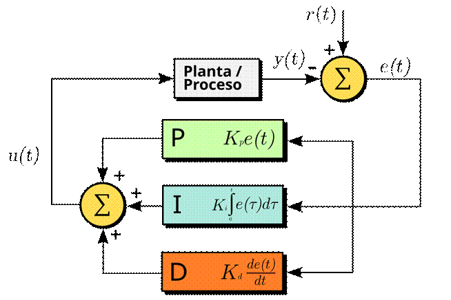
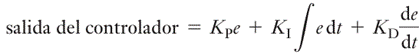
El control PID es ampliamente utilizado en la industria debido a su capacidad para mantener la estabilidad y precisión en procesos dinámicos.
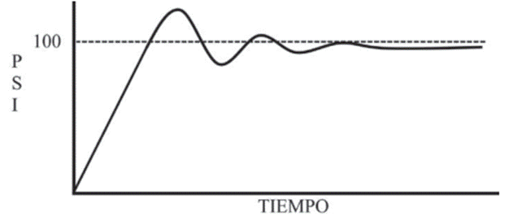
CONTROL BASADO EN TIEMPOS Y EVENTOS:
Basado en tiempos (CBT)
Las operaciones dependen de cronogramas predefinidos. Por ejemplo, una máquina que cambia de operación cada cierto tiempo. Las operaciones ocurren secuencialmente, de acuerdo con un tiempo preestablecido y programado, sin importar que los eventos o acciones anteriores se hayan efectuado.
Aunque puede ser útil en ciertas condiciones, resulta inseguro en aplicaciones críticas.
Basado en eventos
Responde a señales específicas, como un sensor que detecta la presencia de un objeto y activa un proceso relacionado. Para que cada acción o evento ocurra necesariamente debe haberse efectuado la acción previa establecida. Es más seguro y confiable, pero más costoso debido a que se incrementa el número de elementos utilizados, pues requieres el uso de sensores y de retroalimentación.
CRITERIOS PARA AUTOMATIZAR:
No todo proceso debe automatizarse por completo desde el inicio. La automatización debe justificarse técnica y económicamente. Se considera la viabilidad técnica, el costo-beneficio y el impacto en la producción. Además, se evalúan factores como la reducción de riesgos y el incremento en la calidad y productividad.
· Viabilidad técnica: Disponibilidad de componentes y facilidad de mantenimiento.
· Costo-beneficio: Reducción de desperdicios, mejora de la calidad y productividad, y disminución de accidentes laborales.
· Flexibilidad del sistema: Adaptación a cambios en productos o procesos. Un análisis detallado asegura que la automatización sea rentable y sostenible.
1.2 Tipos de automatización: fija, flexible y programable.
SISTEMAS DE AUTOMATIZACIÓN FIJA
Diseñada para altos volúmenes de producción. Ofrece alta eficiencia pero es inflexible ante cambios. Este tipo de automatización se utiliza para la producción en masa, donde las máquinas están diseñadas para realizar una tarea específica a alta velocidad y con alta eficiencia. Por ejemplo, líneas de ensamblaje en la industria automotriz. Su principal limitación es la falta de flexibilidad, ya que el diseño es costoso y difícil de adaptar a nuevos productos.
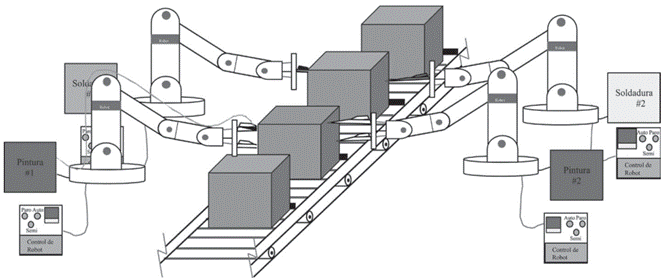
SISTEMAS DE AUTOMATIZACIÓN PROGRAMABLE
Flexible para bajos volúmenes y múltiples configuraciones de productos. Ejemplos incluyen máquinas CNC y PLC. Se aplica en volúmenes de producción más bajos o medianos y permite adaptarse a productos con configuraciones diferentes. Utiliza herramientas como PLCs y CNC (control numérico computarizado), que pueden ser reprogramados para nuevos procesos, ofreciendo flexibilidad a un costo razonable.
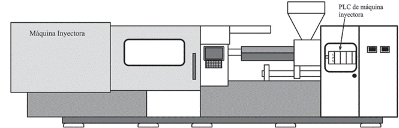
SISTEMAS DE AUTOMATIZACIÓN FLEXIBLE
Este tipo de sistemas es una extensión de la automatización programable, pero con mayor rapidez para adaptarse a nuevos productos sin interrupciones significativas. Se utiliza en celdas de manufactura automatizadas donde la mezcla de productos es continua. Combina flexibilidad y eficiencia, siendo ideal para industrias con alta personalización de productos.
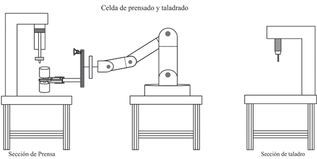
Algunas características de la automatización flexible son:
1. Producción continua de la mezcla de productos.
2. Tasa de producción media.
3. Flexibilidad a las variaciones del diseño del producto.
Un ejemplo de este sistema es la celda de manufactura automatizada con base en PLC.
1.3 Clases de automatización: mecánica, eléctrica, electrónica, neumática, hidráulica, mixta o híbrida.
AUTOMATIZACIÓN MECÁNICA
Utiliza componentes mecánicos para operaciones simples. Se basa en componentes mecánicos para operaciones específicas como prensado, perforación o corte. Aunque confiable, tiene limitaciones en complejidad y flexibilidad.
AUTOMATIZACIÓN ELÉCTRICA
Depende de circuitos eléctricos como relevadores para controlar procesos.
Utiliza circuitos eléctricos simples o avanzados, como relevadores o sistemas de contactores, para controlar procesos. Es un tipo de automatización tradicional, aún común en aplicaciones básicas.
AUTOMATIZACIÓN ELECTRÓNICA
Implementa sistemas electrónicos avanzados, como PLC y sensores programables.
Incluye sistemas avanzados como microcontroladores, PLC y sensores inteligentes, proporcionando control preciso y capacidad de monitoreo en tiempo real.
AUTOMATIZACIÓN NEUMÁTICA E HIDRÁULICA
Neumática: Utiliza aire comprimido para operar actuadores, ideal en ambientes explosivos o peligrosos.
Hidráulica: Ofrece gran fuerza y precisión, adecuada para maquinaria pesada o procesos que requieren altos niveles de potencia.
AUTOMATIZACIÓN MIXTA O HÍBRIDA
Combina múltiples tecnologías para maximizar la eficiencia y adaptabilidad del sistema. Combina tecnologías mecánicas, eléctricas, electrónicas, neumáticas e hidráulicas para maximizar la eficiencia. Es común en sistemas complejos que requieren una alta adaptabilidad.
2. Sensores y actuadores industriales.
2.1 Definiciones de sensor y de actuador.
DEFINICIONES
Sensor: Es un dispositivo que adapta las variables físicas del proceso en señales eléctricas que pueden ser interpretadas por sistemas de control. En algunos casos, estos dispositivos pueden conectarse directamente a las entradas de un controlador lógico programable (PLC) sin necesidad de dispositivos adicionales. Los sensores se consideran los "observadores" del proceso dentro de un sistema automático. Se dividen en dos grupos principales: sensores analógicos y sensores de proximidad del tipo discreto. Los analógicos miden variables continuas, como temperatura o presión, mientras que los discretos detectan la presencia o ausencia de objetos.
Características
· Rango de medida
· Precisión
· Offset o desviación de cero
· Resolución
· Derivas
Actuador: Es un dispositivo que transforma la energía de un sistema en movimiento físico. En el caso de los sistemas neumáticos, los actuadores convierten la energía del aire comprimido en movimiento lineal, angular o giratorio. Los actuadores pueden clasificarse según el tipo de movimiento que generan: lineales, rotativos y oscilantes.
Los actuadores lineales, como los cilindros neumáticos de simple o doble efecto, son comunes en sistemas automáticos y se utilizan para mover cargas en línea recta.
2.2 Diferencia entre sensores y transductores.
DIFERENCIA
Aunque a menudo se utilizan indistintamente, sensores y transductores tienen diferencias clave. Un sensor es un dispositivo que detecta cambios en variables físicas y los convierte en señales eléctricas. Un transductor, en cambio, es un dispositivo que adapta un tipo de energía a otro, permitiendo que el sistema que aloja la lógica de control interprete la señal. En algunos casos, un transductor puede incluir al sensor, mientras que en otros, el sensor y el transductor son componentes separados.
Por lo general, la señal de salida de los sensores no es apta para su lectura directa y a veces tampoco para su procesado, por lo que se usa un circuito de acondicionamiento, por ejemplo un puente de Wheatstone, amplificadores y filtros electrónicos que adaptan la señal a los niveles apropiados para el resto de los circuitos.
Por ejemplo, un LVDT (Transformador Diferencial Variable Lineal) es un transductor que convierte el desplazamiento lineal en una señal eléctrica proporcional. Aunque mide el movimiento, la señal resultante necesita ser interpretada por un sistema de control, lo que lo clasifica como transductor. En contraste, un sensor de temperatura, como un termopar, detecta la temperatura y genera una señal eléctrica directamente interpretable.
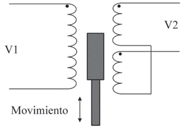
2.3 Clasificaciones de los sensores y de los actuadores.
CLASIFICACIONES
Sensores
Es un dispositivo eléctrico y/o mecánico convierte magnitudes físicas (luz, magnetismo, presión, etc.) en valores medibles de dicha magnitud.
Sensores Analógicos: Proporcionan una señal continua en el tiempo, como voltajes de 0 a 10 VCD o corrientes de 4 a 20 mA. Ejemplos incluyen termorresistencias y galgas extensiométricas.
Sensores Discretos o Digitales: Detectan condiciones binarias (presencia/ausencia, encendido/apagado). Ejemplos son los sensores inductivos y de proximidad.
Contacto
· Microswitches: Es un dispositivo compuesto por una palanca de accionamiento y usualmente tres contactos, los conectores de los Microswitches son: común normalmente abierto y normalmente cerrados
· Finales de carrera: Son dispositivos eléctricos, neumáticos o mecánicos que internamente pueden contener interruptores normalmente abiertos cerrados o conmutadores.
· Piezoeléctricos: Es un dispositivo que utiliza el efecto piezoeléctrico para medir presión, aceleración, tensión o fuerza transformando las lecturas en señal eléctricas.
Sin contacto
· Inductivos: Son una clase especial de sensores que sirve para detectar materiales ferrosos, son de gran utilización en la industria, tanto para aplicaciones de posicionamiento como para detectar la presencia o ausencia de objetos metálicos
· Capacitivos: Reaccionen ante metales y no metales que al aproximarse a la superficie activa sobrepasa una determinada capacidad. La distancia de respectos a un determinado material es tanto mayor cuando más elevada sea su constante dieléctrica.
· Magnéticos: Solo reaccionan ante la presencia de campos magnéticos, permite detectar: imanes permanentes y electroimanes.
· Ópticos: Operan mediante un transductor, convierte la incidencia de un rayo de luz en una señal eléctrica utilizable.
· Ultrasónicos: Miden la distancia mediante el uso de ondas ultrasónicas
Sensores Activos y Pasivos:
· Activos: Generan su propia señal eléctrica al detectar una variable. Ejemplo: termopares.
· Pasivos: Requieren una fuente externa de energía para operar. Ejemplo: termorresistencias.
Sensores de Proximidad:
· Inductivos: Detectan metales sin contacto físico.
· Capacitivos: Detectan materiales no metálicos.
· Ópticos: Utilizan luz para detectar objetos.
Actuadores
Es un dispositivo inherente mecánico cuya función es proporcionar fuerza para mover otro elemento. La fuerza que provoca el actuador proviene de 3 fuentes posibles, Presión neumática, presión hidráulica y fuerza motriz eléctrica. Dependiendo del origen de la fuerza el actuar se denomina neumático, hidráulico o eléctrico.
Actuadores eléctricos
· Servomotores: Es un dispositivo similar a un motor de corriente continua que tienen la capacidad de ubicarse en cualquier posición dentro de un rango de operación y mantenerse usable en dicha posición. Puede ser controlado tanto e velocidad como en posición.
· Cilindro eléctrico: Son autoblocantes, lo que significa que en estado de reposo no requieren energía. Una o varias bobinas se colocan en un campo magnético generado por imanes permanentes, y al hacer circular corriente por la bobina se genera un campo magnético que interactúa con el campo fijo.
· Alambres musculares: También conocidos como alambres termos contraíbles, son usados como músculos en robótica y se hacen de nitinol. El nitinol en una clase de material al que se llama aleación con memoria y se contrae cuando se calienta, que es lo contrario de lo que ocurre al metal estándar, esta aleación no solo se contrae con el calor, si no que produce un movimiento térmico.
· Polímeros electroactivos: Los EAP, son polímeros que presentan alguna actividad (usualmente cambio de forma o tamaño) al ser estimulados por un campo eléctrico. Sus aplicaciones principales son como actuadores y como sensores.
Actuadores hidráulicos
· Cilindros hidráulicos: Los cilindros hidráulicos son mecanismos que constan de un cilindro dentro del cual se desplaza un embolo o pistón, y que transforma la presión de un líquido, mayormente aceite, en energía mecánica. Estos obtienen la energía de un fluido hidráulico presurizado, típicamente aceite, consiste básicamente en 2 piezas, un cilindro barril y un pistón o embolo móvil conectados a un vástago
· Motores hidráulicos: Es un actuador mecánico que convierte presión hidráulica y flujo en un par de torsión y un desplazamiento anular, es decir, en una rotación o giro. Su funcionamiento es pues inverso al de las bombas hidráulicas y es rotatorio. Se emplean por que entrega un par muy grande a velocidades de giro pequeñas en comparación de los motores eléctricos.
· Motores hidráulicos de oscilación: Se aplican cuando el eje tiene que girar un ángulo determinado. El espacio de trabajo que el motor tenga determinada su ampliación en uno u otro caso. La activa de estos dispositivos se puede dar por palancas, rodillos, levas o cualquier otra clase de activamente mecánico.
Actuadores neumáticos
· Cilindro de simple efecto: ES un tubo de sección circular constante, cerrados por ambos extremos, en cuyo interior se desliza un embolo solidario con un vástago que atraviesa uno de los fondos, el embolo divide al cilindro en dos volúmenes llamados cámara y existen dos aberturas en la cámara oír donde pueden entrar y salir el aire. La capacidad de trabajo de un cilindro viene determinada por su carrera y su diámetro.
· Cilindro de doble efecto: Son capaces de producir trabajo útil en dos sentidos, ya que disponen de una fuerza activa tanto en avance como en retrocesos, se construyen siempre en forma de cilindros de embolo y poseen dos tomas para aire comprimido, cada una de ellas situada en una de las tapas de cilindro. La activación de estos dispositivos se puede dar por palancas, rodillos, levas o cualquier otra clase de activamente mecánico.
· Motor neumático: Es un tipo de motor que realiza un trabajo mecánico por expansión de aire comprimido. Generalmente convierten el aire comprimido en trabajo mecánico a través de un movimiento lineal o principalmente rotativo. En este último caso el gas entra en una cámara del motor sellada y al expandirse ejerce presión contra las palas del rotor.
· Musculo neumático: Musculo neumático no tienen partes mecánicas móviles, con lo que tampoco se produce fricción externa. También conocido como musculo fluido, puede utilizarse como actuador para las más diversas tareas. Es un actuador de tracción que funciona como un musculo humano, en comparación con los cilindros neumáticos, es capaz de generar una fuerza de tracción inicial para más grandes.
· Actuadores Lineales
Cilindros de Simple Efecto: Utilizan aire comprimido para mover el émbolo en una dirección, y un resorte para el retorno.
Cilindros de Doble Efecto: El aire comprimido controla tanto la extensión como la retracción del émbolo.
· Actuadores Rotativos
Motores Neumáticos: Transforman la energía del aire comprimido en rotación continua.
· Actuadores Oscilantes
Actuadores Semigiratorios: Proporcionan un movimiento angular limitado.
2.4 Características y principios de funcionamiento de los sensores y de los actuadores.
CARACTERÍSTICAS Y FUNCIONAMIENTO
Sensores
Sensores Inductivos: Utilizan un campo electromagnético para detectar objetos metálicos. Su ventaja radica en su resistencia a ambientes sucios y su alta durabilidad debido a la ausencia de partes móviles. El principio de funcionamiento se basa en la variación del campo electromagnético al acercar un objeto metálico, lo que altera la oscilación de la bobina interna.
Sensores de Temperatura:
Termopares: Basados en el efecto Seebeck, generan una diferencia de voltaje proporcional a la temperatura entre dos metales distintos unidos.
Termorresistencias (RTD): Cambian su resistencia eléctrica con la temperatura, proporcionando una medida precisa pero más lenta que los termopares.
Sensores de Presión:
Galgas Extensiométricas: Detectan deformaciones mecánicas mediante cambios en la resistencia de un conductor.
Actuadores
Cilindros Neumáticos:
Principio de Funcionamiento: El aire comprimido se introduce en una cámara, empujando un émbolo que genera movimiento lineal.
En los cilindros de doble efecto, el aire controla tanto la extensión como la retracción del émbolo, permitiendo un control más preciso.
Motores Neumáticos:
Funcionamiento: Transforman la energía del aire comprimido en rotación continua. Son usados en aplicaciones donde se requiere un movimiento rotativo constante, como en herramientas neumáticas.
2.5 Áreas de aplicación.
SENSORES
Su funcionamiento depende del tipo (analógico o discreto). Ejemplo:
· Termorresistencias: Basadas en la variación de resistividad eléctrica por la temperatura.
· Sensores inductivos: Detectan objetos metálicos sin contacto directo mediante campos electromagnéticos.
ACTUADORES
Funcionan transformando energía en movimiento. Ejemplo:
· Cilindros neumáticos: Usan presión de aire comprimido para generar movimiento lineal.
2.6 Criterios de selección (ventajas y desventajas).
CONSIDERACIONES GENERALES
· Voltaje de alimentación
· Tipo de salida
· Alcance requerido
· Material del que están hechos los objetos a detectar
· Tamaño y geometría de las piezas
· Velocidad de desplazamiento
· Ambiente de trabajo (temperatura, humedad, vibraciones)
· Factores externos que puedan afectar las lecturas
· Aspectos de seguridad
· Costo
Sensores
· Ventajas: Alta precisión, repetibilidad, integración con PLCs.
· Desventajas: Costos iniciales altos, posible necesidad de mantenimiento.
Actuadores
· Ventajas: Disponibles en varias tecnologías para adaptarse a distintos requisitos de potencia y velocidad.
· Desventajas: Sensibilidad a condiciones ambientales (especialmente los neumáticos e hidráulicos).
3. Controladores Lógicos Programables (PLC).
3.1 Programación de los PLC. Métodos de programación. Dispositivos electrónicos (temporizadores, contadores, relevadores internos, etc.).
MÉTODOS DE PROGRAMACIÓN
Los Controladores Lógicos Programables (PLC) pueden ser programados mediante diferentes métodos que permiten implementar la lógica de control de sistemas automatizados. Estos métodos han evolucionado desde sus inicios con la programación en texto hasta representaciones gráficas más intuitivas.
· LD (Ladder Diagram o Diagrama de escalera): Simula el control de relés eléctricos. Muy usado por técnicos por su facilidad visual.
· ST (Structured Text): Lenguaje de alto nivel similar a Pascal o C. Ideal para expresiones complejas.
·
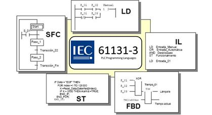
IL (Instruction List): Similar al ensamblador (obsoleto en versiones nuevas).· FBD (Function Block Diagram): Representación gráfica orientada a funciones. Muy usado en Europa.
· SFC (Sequential Function Chart): Representa el comportamiento secuencial del sistema, basado en redes de Petri.
Programación por instrucciones - IL (Instruction List)
Técnica en formato de texto; menos común debido a su complejidad para programas avanzados.
La programación por instrucciones es una técnica que emplea líneas de código en formato de texto, similar a los lenguajes de programación de bajo nivel.
En los primeros PLC, esta era la única opción disponible y se realizaba con programadores manuales (hand-held programmers).
En este método, cada línea de código representa una operación lógica, matemática o de control.
Es útil en aplicaciones en las que el espacio de memoria es limitado o cuando se necesita un control de bajo nivel.
Sin embargo, debido a su complejidad y dificultad para depurar errores, ha sido sustituida por métodos más gráficos en la mayoría de las aplicaciones industriales
Programación con funciones lógicas
Usa operadores lógicos como AND, OR y NOT. Se aplica en pequeños PLC para problemas de nivel básico a medio.
La programación con funciones lógicas permite estructurar el programa de un PLC utilizando operadores lógicos básicos como:
AND (Y) OR (O) NOT (NO) EXOR (XOR)
Esta técnica se emplea principalmente en pequeños PLC y en aplicaciones que no requieren una lógica compleja. Permite representar el control de procesos mediante combinaciones de puertas lógicas y ecuaciones booleanas.
Su uso es común en el diseño de sistemas digitales de control de nivel básico a medio. Es adecuada para resolver problemas que implican combinaciones lógicas simples.
Lógica de contactos o diagrama escalera (LADDER)
Técnica más utilizada. Representa el circuito con dos líneas paralelas que simulan rieles y contactos (abiertos o cerrados) como "escalones".
El diagrama escalera (Ladder Logic) es el método de programación más utilizado en la industria debido a su similitud con los esquemas eléctricos tradicionales.
Representa visualmente un circuito de control utilizando dos líneas verticales paralelas (que simulan los rieles de alimentación) y elementos como contactos y bobinas que forman "escalones".
La estructura básica consiste en:
· Contactos normalmente abiertos (NA) y contactos normalmente cerrados (NC).
· Bobinas que representan dispositivos de salida como relevadores o temporizadores.
· Condiciones en serie o paralelo que determinan el flujo de corriente y el estado de las salidas.
Este método es ideal para la automatización de procesos industriales ya que es fácil de leer y comprender por técnicos con experiencia en esquemas eléctricos, permite modificar y ampliar programas sin necesidad de reconfigurar hardware y puede resolver problemas desde los más simples hasta sistemas complejos
DISPOSITIVOS ELECTRÓNICOS EN PLC
Los PLC utilizan diversos dispositivos electrónicos para controlar y gestionar señales digitales y analógicas dentro de un sistema de automatización.
Entre los más importantes están los temporizadores, contadores y relevadores internos. Incluyen temporizadores (TON y TOF), contadores, relevadores internos y entradas/salidas digitales y analógicas.
Temporizadores (Timers)
Los temporizadores permiten realizar operaciones basadas en el tiempo, como retardos en la activación o desactivación de una señal. Existen diferentes tipos:
Temporizador con retardo a la activación (TON - Timer ON Delay)
Se activa cuando la entrada recibe una señal y comienza a contar el tiempo preconfigurado.
La salida se activa cuando el tiempo ha transcurrido completamente.
Se usa en aplicaciones como arranque de motores con retardo y secuenciación de procesos.
Temporizador con retardo a la desactivación (TOF - Timer OFF Delay)
Se activa inmediatamente cuando la entrada recibe una señal.
Cuando la entrada se apaga, comienza a contar el tiempo antes de desactivar la salida.
Se usa en sistemas donde es necesario mantener activado un dispositivo durante un tiempo adicional después de desactivar la entrada.
Temporizador retentivo (RTO - Retentive Timer ON)
Mantiene el tiempo acumulado incluso si la señal de entrada se apaga.
Requiere una señal de reset para reiniciar el conteo.
Es útil en procesos que necesitan registrar el tiempo total de operación de una máquina.
Contadores (Counters)
Los contadores permiten registrar la cantidad de eventos o señales generadas en un proceso. Son fundamentales en aplicaciones como conteo de productos en líneas de ensamblaje y seguimiento de ciclos de operación.
Los tipos de contadores en un PLC incluyen:
Contador ascendente (CTU - Count Up)
Incrementa su valor con cada pulso de entrada.
Activa una salida cuando se alcanza un valor preestablecido.
Se usa en sistemas de producción para contar productos fabricados.
Contador descendente (CTD - Count Down)
Disminuye su valor con cada pulso de entrada.
Se emplea en aplicaciones donde se requiere un conteo regresivo, como gestión de inventarios.
Contador bidireccional (CTUD - Count Up/Down)
Combinación de los contadores ascendentes y descendentes.
Permite contar en ambas direcciones según la entrada de señal.
Relevadores internos
Los relevadores internos en un PLC funcionan como variables de software que simulan el comportamiento de un relevador electromecánico sin necesidad de hardware adicional.
· Permiten almacenar estados lógicos y controlar la activación y desactivación de procesos.
· Se utilizan para memorización de estados, coordinación de eventos y sincronización de procesos automatizados.
· Facilitan la creación de secuencias de control sin necesidad de relevadores físicos adicionales.
TIEMPO DE SCAN
El tiempo de SCAN es el tiempo que tarda el PLC en completar un ciclo de operación, el cual incluye:
- Lectura de entradas: Captura los valores de sensores y dispositivos de entrada.
- Ejecución del programa: Procesa las instrucciones definidas en la lógica de control.
- Actualización de salidas: Envía señales a los actuadores según la lógica programada.
- Diagnóstico y comunicación: Realiza chequeos internos y comunicación con otros dispositivos.
El tiempo de scan depende de la velocidad del CPU del PLC y del tamaño del programa. En aplicaciones de alta velocidad, optimizar la programación es clave para reducir el tiempo de respuesta.
3.2 Introducción. Historia y origen de los PLC. Funcionamiento y selección de relevadores.
INTRODUCCIÓN
Los PLC son dispositivos electrónicos reutilizables, diseñados para controlar procesos industriales de forma programada. Fueron desarrollados en los años 60 para reducir el costo de sistemas basados en relevadores.
· Botón Pulsadores: De acción momentánea con retorno por resorte
· Botones enclavados o enclavamiento: Una vez accionados mantienen su posición.
· TRIACS: (Tríode for Alternating Current) Componente electrónico semiconductor de tres terminales para controlar la corriente. Conmutador de corriente alterna.
DEFINICIÓN
Según la National Electrical Manufacturers Association (NEMA), en su norma NEMA ICS3-1978, un PLC es:
"Un aparato electrónico operado digitalmente, que usa una memoria programable para el almacenamiento interno de instrucciones para implementar funciones específicas, tales como lógica, secuenciación, registro y control de tiempos, conteo y operaciones aritméticas para controlar, a través de módulos de entrada /salidas digitales (ON/OFF) o analógicos (1-5 VCD, 4-20 mA, etc.), varios tipos de máquinas o procesos.
Los PLC´s son computadoras de propósito dedicado y sirven para:
· Supervisar
· Controlar
· Automatizar
HISTORIA
El desarrollo de los PLC está ligado a la evolución de la Automatización Industrial. Antes de la aparición de estos dispositivos, los sistemas de control industrial dependían de relevadores electromecánicos y circuitos cableados que requerían una gran cantidad de espacio y mantenimiento.
En la década de 1960, la empresa General Motors propuso la creación de un dispositivo electrónico que pudiera reemplazar estos circuitos fijos, dando origen al primer PLC, desarrollado por la compañía Modicon. Desde entonces, los PLC han evolucionado significativamente, incorporando capacidades de comunicación, procesamiento de datos y compatibilidad con diferentes lenguajes de programación.
1960: A finales de la década la industria busca soluciones de control más eficiente. Reemplazo de sistemas de control basado en circuitos electrónicos (Relevadores, interruptores). La empresa Bedford Associates propuso un sistema al que llamo Modular Digital Controller o MODICON. Fue el primer PLC producido comercialmente.
1973: Los PLC integraron la habilidad de comunicación entre ellos. El primer sistema que lo hacía fue el Modbus de Modicon, Ahora los PLC´s podían estar alejados de la maquinaria que controlaban.
NO existían estandarización, por tanto, los cambios en los avances tecnológicos volvieron difícil la comunicación.
En los 80´s se intentó estandarizar la comunicación entre los PLC´s con el protocolo de automatización de manufactura de la General Motors (MAP)
El estándar IEC-1131-3 intento combinar los lenguajes de programación de los PLC en un solo estándar internacional. Los PLC´s ahora trabajan en lenguajes como diagrama de bloques, listas de instrucciones, lenguajes C, Etc.
FUNCIONAMIENTO DE LOS PLC
El funcionamiento de un PLC se basa en la ejecución cíclica de un programa de control. Este proceso consta de varias fases: lectura de las entradas, ejecución de la lógica programada y actualización de las salidas. La rapidez con la que se ejecuta este ciclo es fundamental para garantizar una respuesta óptima en aplicaciones industriales.
El funcionamiento de un PLC se basa en la ejecución continua de un ciclo de escaneo que consta de cuatro etapas principales:
1. Barrido de entradas: En esta etapa, el PLC lee los estados de los sensores, interruptores y otros dispositivos de entrada conectados. Estos valores se almacenan temporalmente en la memoria del PLC para su procesamiento.
2. Ejecución de la lógica de control: Una vez que el PLC ha leído las entradas, ejecuta el programa de usuario, procesando las instrucciones para determinar qué salidas deben activarse o desactivarse.
3. Actualización de salidas: Los resultados del procesamiento lógico se reflejan en los actuadores, motores, válvulas y otros dispositivos de salida. Esta actualización ocurre al final de cada ciclo de escaneo.
4. Diagnóstico y comunicación: El PLC también realiza comprobaciones internas para detectar fallos en el hardware o errores en el programa. Además, puede intercambiar datos con otros dispositivos o sistemas informáticos.
El tiempo que tarda el PLC en completar un ciclo de escaneo se denomina tiempo de scan, y depende de la velocidad del procesador y la complejidad del programa de control.
SELECCIÓN DE RELEVADORES
Los relevadores son dispositivos electromecánicos que permiten controlar circuitos de alta potencia mediante señales de bajo voltaje.
En los sistemas automatizados, la selección adecuada de relevadores es crucial para garantizar la seguridad y eficiencia del proceso.
Tipos de relevadores utilizados en sistemas de automatización:
· Relevadores de control: Se utilizan para manejar señales de bajo voltaje y baja corriente en circuitos de control.
· Relevadores de potencia o contactores: Diseñados para manejar cargas de alta corriente, como motores eléctricos y sistemas de calefacción.
· Relevadores de tiempo (Timers): Permiten la activación o desactivación de circuitos después de un tiempo predefinido.
3.3 Construcción y lógica de funcionamiento de un PLC. Mapa de memoria. Áreas de aplicación.
ESTRUCTURA INTERNA DE UN PLC
La estructura interna de un PLC se compone de varios elementos clave que le permiten ejecutar programas de control de manera eficiente y confiable en entornos industriales.
Cada componente cumple una función específica para garantizar el correcto funcionamiento del sistema.
CPU (Unidad central de procesamiento): Controla todo el funcionamiento del PLC. Es el cerebro, comúnmente consiste en un microprocesador que se encarga de implementar la lógica de funcionamiento y controlar las comunicaciones entre los módulos.
Requiere de memoria para almacenar los resultados de las operaciones lógicas que realiza el microprocesador. Así mismo, para el programa se requiere una memoria EPROM o EEPROM, además de RAM. También incluye un reloj interno para sincronizar operaciones y diagnosticar posibles fallos en la ejecución del programa.
Entradas y Salidas (I/O): La cantidad de entradas y salidas de cada controlador está dada por el fabricante. Es importante mencionar que los controladores de forma básica ya cuentan con un número específico de estas, sin embargo, en el caso de los PLC´s modulares, se les puede integrar más módulos que incrementan su capacidad I/O.
El número de módulos adicionales será limitado de acuerdo con las especificaciones del fabricante. Las entradas pueden ser digitales o analógicas, permitiendo la conexión con una amplia gama de sensores y dispositivos. Las salidas también pueden ser de diferentes tipos, incluyendo relevadores, transistores y triacs, dependiendo de la aplicación específica.
Fuente de alimentación (Supply): Provee niveles adecuados de voltaje, como 24VDC o 85-265V AC. Algunos PLC incluyen una fuente de 24VDC para alimentar sensores y módulos externos.
También pueden incluir sistemas de protección contra sobretensiones y cortocircuitos para garantizar la estabilidad del sistema.
MAPA DE MEMORIA
Organiza los datos de entradas, salidas, temporizadores y contadores. El mapa de memoria de un PLC típico está dividido en las siguientes secciones:
· Memoria de Programa: Contiene el código de control diseñado por el usuario. Puede almacenarse en memoria EEPROM, FLASH o RAM con batería de respaldo.
· Memoria de Datos: Guarda variables y valores temporales generados durante la ejecución del programa.
· Memoria de Entradas y Salidas: Registra los estados actuales de los dispositivos conectados al PLC.
· Memoria de Temporizadores y Contadores: Contiene los valores de los temporizadores y contadores utilizados en la lógica de control. Un PLC modular permite ampliar su memoria mediante tarjetas de expansión, lo que le da mayor capacidad de procesamiento y almacenamiento.
Proceso de Scan (Scan Cycle)
El proceso de escaneo (Scan Cycle) es el mecanismo mediante el cual el PLC ejecuta su programa de control. Este proceso se repite de manera continua y se compone de tres fases principales.
1. Entrada: El PLC copia los valores de los sensores y dispositivos de entrada en memoria. Esto permite que el sistema procese los datos sin interrupciones, incluso si las señales de entrada cambian durante la ejecución del programa.
2. Ejecución de lógica: Procesa las instrucciones del programa para determinar qué salidas deben activarse o desactivarse. La CPU evalúa las condiciones establecidas en el código y toma decisiones en función de los valores de entrada almacenados en la memoria.
3. Salida: El PLC envía señales a los actuadores, motores, relevadores y otros dispositivos de salida para ejecutar las acciones necesarias. Este proceso se completa en cuestión de milisegundos y se repite constantemente para garantizar una respuesta rápida y precisa del sistema.
En la primera fase, conocida como barrido de entradas, el PLC copia los valores de los sensores y dispositivos de entrada en la memoria. Esto permite que el sistema procese los datos sin interrupciones, incluso si las señales de entrada cambian durante la ejecución del programa.
En la segunda fase, denominada ejecución de la lógica de control, el PLC procesa las instrucciones del programa para determinar qué salidas deben activarse o desactivarse. La CPU evalúa las condiciones establecidas en el código y toma decisiones en función de los valores de entrada almacenados en la memoria.
Finalmente, en la fase de actualización de salidas, el PLC envía señales a los actuadores, motores, relevadores y otros dispositivos de salida para ejecutar las acciones necesarias. Este proceso se completa en cuestión de milisegundos y se repite constantemente para garantizar una respuesta rápida y precisa del sistema.
El tiempo total que tarda el PLC en completar un ciclo de escaneo se conoce como tiempo de scan y varía según la capacidad del procesador y la complejidad del programa. Un tiempo de scan reducido es fundamental en aplicaciones donde se requiere alta velocidad de respuesta, como en la robótica y el control de maquinaria de precisión.
Conexiones – Sinking & Sourcing
· Sinking (Corriente entrante): El dispositivo suministra corriente a la entrada del PLC.
· Sourcing (Corriente saliente): El dispositivo recibe corriente desde el PLC.
La selección del tipo de conexión depende del tipo de sensor o actuador conectado y de la configuración del sistema de control.
TIPOS
PLC COMPACTOS
Tienen un número fijo de entradas y salidas.
Son ideales para aplicaciones simples donde no se requiere expansión.
PLC MODULAR
Permiten la adición de módulos de expansión para aumentar el número de entradas, salidas y capacidad de procesamiento. Son utilizados en líneas de producción, robótica industrial y sistemas de control complejos.
4. Neumática.
4.1 Compresores e instalaciones neumáticas.
SISTEMAS NEUMÁTICOS
La neumática es una rama de la ingeniería que estudia el uso del aire comprimido como fuente de energía para generar movimiento o realizar trabajo útil.
Es una de las tecnologías más utilizadas en la automatización industrial debido a su simplicidad, bajo costo de mantenimiento, velocidad de respuesta y adaptabilidad a diferentes entornos.
Fundamentos de la Neumática
La neumática se basa en la compresión del aire atmosférico para utilizarlo como medio de transmisión de energía.
Este aire comprimido se genera a través de compresores y se almacena en tanques o redes de distribución, para ser luego canalizado mediante válvulas y tuberías hacia actuadores o dispositivos de trabajo.
Ventajas:
· Abundante y disponible de forma ilimitada.
· Almacenamiento sencillo.
· Transporte fácil mediante tuberías.
· No requiere conductos de retorno.
· Resistente a variaciones de temperatura.
· No explosivo ni inflamable (antideflagrante).
· Limpio y adecuado para entornos estériles o delicados.
· Elementos simples y fáciles de comprender.
· Velocidad de trabajo elevada y fácilmente regulable.
· Buena resistencia a sobrecargas.
Desventajas:
· Preparación previa del aire (filtrado, regulación, lubricación).
· El aire es compresible, lo cual limita la precisión en ciertos movimientos.
· Fuerza limitada (hasta 30 kN en la mayoría de los casos).
· Ruido generado por los escapes.
· Ineficiencia energética comparado con sistemas eléctricos o hidráulicos.
Las instalaciones neumáticas desempeñan un papel fundamental en una amplia variedad de aplicaciones industriales, desde la automatización de procesos hasta la manufactura y el control de maquinaria.
En el corazón de cualquier sistema neumático se encuentran los compresores, los cuales tienen la función de generar y suministrar aire comprimido para alimentar distintos equipos y herramientas.
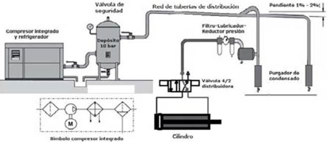
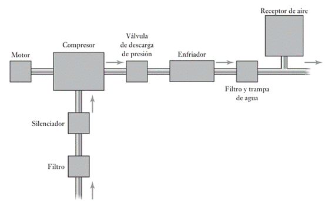
Los compresores funcionan al aumentar la presión del aire ambiental, almacenándolo en un depósito o distribuyéndolo directamente a la red de consumo. Existen diversos tipos de compresores según su principio de funcionamiento y aplicación específica.
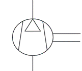
TIPOS DE COMPRESORES NEUMÁTICOS
Los compresores pueden clasificarse en dos grandes categorías: compresores de desplazamiento positivo y compresores dinámicos.
Compresores de desplazamiento positivo
Se basa fundamentalmente en la reducción de volumen. El aire es captado desde la atmósfera en una cámara aislada del medio exterior, donde su volumen es gradualmente disminuido, produciéndose una compresión. Cuando una cierta presión es alcanzada, provoca una apertura de las válvulas de descarga a la atmósfera para evitar una sobre presión que ponga en riesgo al propio equipo y al personal que esté en contacto con este equipo.
Los compresores de desplazamiento positivo operan reduciendo el volumen de una cantidad fija de aire y expulsándolo a alta presión. En esta categoría encontramos los compresores de pistón, los de tornillo rotativo y los de paletas.
Los compresores de pistón son los más comunes y consisten en un cilindro y un pistón que comprime el aire mediante movimientos alternativos. Son eficientes para aplicaciones intermitentes y requieren mantenimiento periódico debido al desgaste de sus partes móviles.
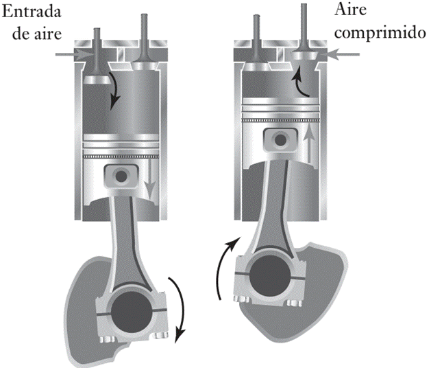
Por otro lado, los compresores de tornillo rotativo funcionan con dos rotores helicoidales que atrapan y comprimen el aire de manera continua. Este tipo de compresor es ideal para aplicaciones industriales que requieren un suministro constante de aire comprimido.
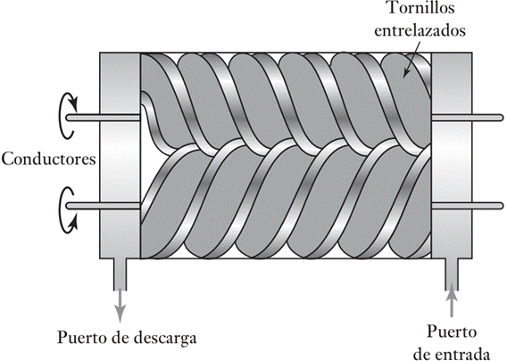
Los compresores de paletas rotativas utilizan paletas deslizantes en un rotor excéntrico para comprimir el aire, destacándose por su diseño compacto y bajo nivel de ruido.
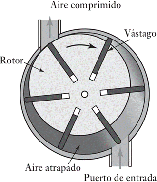
Compresores desplazamientos dinámicos
Los compresores dinámicos, también conocidos como turbocompresores, operan mediante la aceleración del aire a través de un impulsor rotativo y su posterior desaceleración en un difusor, lo que provoca un aumento de presión. Este principio de funcionamiento es utilizado en los compresores centrífugos y axiales.
Los compresores centrífugos son ampliamente utilizados en industrias que requieren grandes volúmenes de aire comprimido, como la petroquímica y la generación de energía. Su diseño permite una alta eficiencia y un mantenimiento relativamente bajo en comparación con los compresores de desplazamiento positivo.
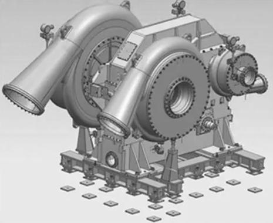
Los compresores axiales, por su parte, son empleados en aplicaciones aeroespaciales y turbinas de gas, ya que pueden manejar flujos de aire extremadamente elevados con mínimas pérdidas de eficiencia.
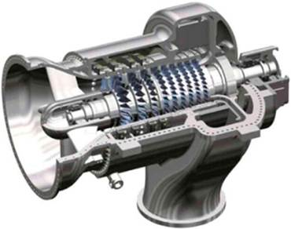
TRATAMIENTO DEL AIRE COMPRIMIDO
El aire al ser captado de la atmósfera debe ser tratado para que sea utilizado en los sistemas neumáticos, si el tratamiento no es el adecuado se incrementaran las fallas y además se disminuirá la vida de los dispositivos que componen el sistema neumático.
El tratamiento del aire comprimido es crucial para eliminar impurezas, humedad y partículas que puedan afectar el rendimiento de los equipos neumáticos. Para ello, se emplean enfriadores, Tanques de presión, filtros, separadores de agua y secadores de aire.
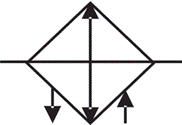
Los filtros eliminan partículas sólidas y contaminantes del aire comprimido, protegiendo los componentes del sistema contra el desgaste prematuro.El enfriador posterior es simplemente un intercambiador de calor utilizado para enfriar el aire comprimido.
Como consecuencia de este enfriamiento, se permite retirar cerca de 75% a 90% de vapor de agua contenido en el aire, así como los vapores de aceite; además de evitar que la línea de distribución sufra una dilatación, causada por la alta temperatura de descarga del aire.
Un sistema de aire comprimido está dotado, generalmente, de uno o más recipientes (Tanques de presión), desempeñando una importante función junto a todo el proceso de producción de aire. En general, el recipiente posee las siguientes funciones:
· Almacenar el aire comprimido.
· Enfriar el aire ayudando a la eliminación de condensado.
· Compensar las fluctuaciones de presión en todo el sistema de distribución.
· Estabilizar el flujo de aire.
· Controlar la modulación de carga y descarga de los compresores
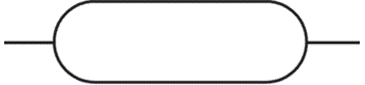
Los secadores de aire, que pueden ser de refrigeración o de adsorción, reducen la humedad relativa del aire comprimido, asegurando un funcionamiento óptimo en aplicaciones sensibles a la presencia de agua.
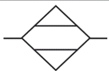
Sistemas de Control y Seguridad
Los sistemas de control y seguridad en instalaciones neumáticas incluyen reguladores de presión, válvulas de alivio, manómetros y sensores de flujo.
Los reguladores de presión permiten mantener una presión constante en el sistema, evitando fluctuaciones que puedan afectar el desempeño de los equipos.
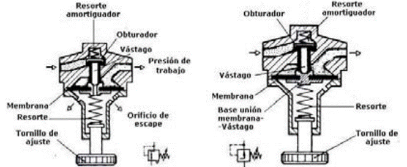
Las válvulas de alivio actúan como dispositivos de seguridad, liberando el exceso de presión para evitar daños en el sistema.
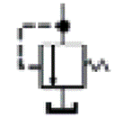
Los manómetros proporcionan una lectura visual de la presión del aire comprimido, facilitando la supervisión y el mantenimiento preventivo.
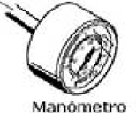
Los sensores de flujo permiten monitorear el consumo de aire comprimido y detectar posibles fugas o anomalías en el sistema.
Red de generación de aire comprimido
El número de dispositivos en una red de generación de aire comprimido puede variar dependiendo de las necesidades del sistema neumático, en aplicaciones del tipo industrial de gran tamaño es recomendable tomar en cuenta a todos los dispositivos antes mencionados como el enfriador posterior, el enfriador refrigerativo, es bueno considerar más de un tanque acumulador de presión para realizar el mantenimiento preventivo de los dispositivos que lo requieran, para poder hacer posible esto se requiere la instalación de puentes
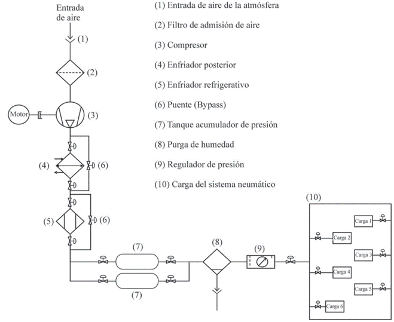
DISEÑO Y COMPONENTES DE UNA INSTALACIÓN NEUMÁTICA
El diseño de una instalación neumática debe considerar varios factores clave para garantizar un funcionamiento eficiente y seguro.
Entre estos factores se encuentran la selección adecuada del compresor, el dimensionamiento de la red de distribución, el almacenamiento y tratamiento del aire comprimido, así como la implementación de sistemas de control y seguridad.
La red de distribución de aire comprimido se compone de tuberías, válvulas, filtros, reguladores y secadores de aire.
Es esencial que las tuberías estén dimensionadas correctamente para minimizar la caída de presión y evitar pérdidas de energía.
Además, se recomienda utilizar materiales resistentes a la corrosión, como el acero inoxidable o el aluminio, para garantizar la durabilidad del sistema.
Generación del aire comprimido
Se realiza mediante compresores, los cuales elevan la presión del aire atmosférico. Después del compresor, se utiliza un tanque acumulador con funciones de:
· Amortiguamiento: Atenúa las fluctuaciones del flujo de aire generado por el compresor y estabiliza el flujo de aire.
· Almacenamiento: Permite disponer de aire comprimido incluso cuando el compresor está inactivo y reduce el trabajo continuo del compresor.
· Acondicionamiento: Facilita la eliminación de impurezas como humedad, partículas o residuos de aceite y elimina contaminantes (agua, aceite, partículas).
Tipos de redes neumáticas:
· Red en línea (bucle abierto): Diseño básico utilizado en instalaciones pequeñas donde se minimiza la longitud de las tuberías.
· Red en anillo (bucle cerrado): Ideal para instalaciones de mayor escala, donde se necesita una presión uniforme en todos los puntos y continuidad operativa incluso ante fallos locales.
Recomendaciones para redes:
· Incluir depósitos auxiliares que compensen variaciones en la demanda.
· Instalar purgadores automáticos cada 30 metros para evitar acumulación de condensados.
· Diseñar la red con una ligera inclinación para facilitar el drenaje de líquidos.
· Tomar derivaciones de la parte superior de la línea principal para evitar aspiración de impurezas.
· Integrar unidades FRL (Filtro, Regulador, Lubricador) para proteger y optimizar el desempeño de los componentes.
4.2 Válvulas neumáticas (distribuidoras, especiales, etc.).
FUNCIÓN DE LAS VÁLVULAS NEUMÁTICAS
Las válvulas neumáticas desempeñan un papel fundamental en los sistemas neumáticos, ya que controlan el flujo y la dirección del aire comprimido para accionar cilindros, motores y otros actuadores.
Se pueden clasificar en diversas categorías según su función y diseño, incluyendo:
· Válvulas distribuidoras.
· Válvulas de control de presión.
· Válvulas de control de caudal.
TIPOS DE VÁLVULAS DISTRIBUIDORAS
Las válvulas distribuidoras son las encargadas de dirigir el flujo de aire comprimido hacia los actuadores y permitir el retorno del aire a la atmósfera o al sistema de escape.
Estas válvulas pueden ser de diferentes configuraciones, como las de 2/2 vías, 3/2 vías, 4/2 vías y 5/2 vías.
Las válvulas de 2/2 vías tienen una entrada y una salida, y pueden ser normalmente abiertas o normalmente cerradas. Se utilizan en aplicaciones donde se requiere simplemente encender o apagar el flujo de aire.
Las válvulas de 3/2 vías agregan una tercera conexión, permitiendo controlar actuadores de simple efecto.
Las válvulas de 4/2 y 5/2 vías son utilizadas en cilindros de doble efecto, permitiendo un control más preciso del movimiento del actuador.
Válvulas de Control de Presión
Las válvulas de control de presión regulan la presión del aire comprimido dentro del sistema, asegurando que los actuadores reciban la presión adecuada para su funcionamiento.
Dentro de esta categoría se encuentran las válvulas reductoras de presión, las válvulas de alivio y las válvulas de secuencia.
Las válvulas reductoras de presión limitan la presión de salida a un valor preestablecido, protegiendo los componentes del sistema contra sobrecargas.
Las válvulas de alivio descargan el exceso de presión cuando esta supera un umbral determinado, actuando como dispositivos de seguridad.
Las válvulas de secuencia permiten que un actuador opere solo después de que otro haya completado su movimiento, asegurando una secuencia lógica en sistemas automatizados.
Válvulas de Control de Caudal
Las válvulas de control de caudal regulan la velocidad del flujo de aire comprimido, permitiendo ajustar la velocidad de los actuadores neumáticos.
Estas válvulas pueden ser unidireccionales o bidireccionales, dependiendo de si el control del caudal se aplica en un solo sentido o en ambos.
Las válvulas de estrangulación permiten restringir el flujo de aire para controlar la velocidad de un cilindro neumático, mientras que las válvulas antirretorno evitan el retroceso del aire en el sistema.
Válvulas Especiales en Sistemas Neumáticos
Existen también válvulas neumáticas especiales diseñadas para aplicaciones específicas, como las válvulas proporcionales y las electroválvulas.
Las válvulas proporcionales permiten un control preciso del flujo y la presión del aire comprimido mediante señales eléctricas, lo que las hace ideales para sistemas automatizados de alta precisión.
Las electroválvulas, por su parte, utilizan solenoides eléctricos para accionar el mecanismo de la válvula, permitiendo su integración en sistemas de control remoto y automatización industrial.
4.3 Actuadores neumáticos (cilindros lineales, cilindros rotatorios y especiales).
INTRODUCCIÓN A LOS ACTUADORES NEUMÁTICOS
Los actuadores neumáticos representan un componente esencial dentro de los sistemas neumáticos industriales y de automatización.
En particular, los cilindros neumáticos son dispositivos encargados de convertir la energía del aire comprimido en movimiento mecánico, proporcionando la fuerza y la velocidad necesarias para realizar diversas tareas.
Estos cilindros pueden clasificarse en varias categorías dependiendo de su estructura, funcionamiento y aplicación específica.
CILINDROS LINEALES NEUMÁTICOS
Los cilindros lineales neumáticos son el tipo más común de actuadores neumáticos y su función principal es generar movimiento rectilíneo.
Están compuestos por un cilindro, un pistón y una varilla que se desplaza dentro del cilindro cuando se aplica aire comprimido en una de sus cámaras.
Este desplazamiento puede ser en un solo sentido, en cuyo caso se denomina cilindro de simple efecto, o en ambos sentidos, lo que se conoce como cilindro de doble efecto.
Los cilindros de simple efecto tienen un muelle de retorno que regresa el pistón a su posición original cuando se deja de aplicar presión, mientras que los de doble efecto requieren aire comprimido en ambas direcciones para controlar su movimiento.
Estos cilindros se utilizan en aplicaciones donde se necesita realizar empujes y desplazamientos con precisión, como en prensas neumáticas, sistemas de embalaje y líneas de ensamblaje automatizadas.
CILINDROS ROTATORIOS NEUMÁTICOS
Por otro lado, los cilindros rotatorios neumáticos convierten la energía del aire comprimido en un movimiento de rotación en lugar de un desplazamiento lineal. Estos actuadores se utilizan en aplicaciones donde es necesario girar un objeto o una herramienta, como en sistemas de manipulación robótica o en la automatización de procesos de ensamblaje.
Existen diferentes tipos de cilindros rotatorios, como los de paletas, que funcionan con un mecanismo de cámaras presurizadas, y los de piñón y cremallera, que convierten el movimiento lineal en rotatorio mediante un mecanismo de engranajes.
La ventaja principal de estos cilindros es su capacidad de ofrecer un control preciso del ángulo de giro, lo que los hace ideales para aplicaciones en la industria manufacturera y en sistemas de ensamblaje automatizados.
CILINDROS NEUMÁTICOS ESPECIALES
En cuanto a los cilindros neumáticos especiales, estos han sido diseñados para aplicaciones específicas en las que los cilindros estándar no son adecuados. Por ejemplo, los cilindros telescópicos permiten un mayor alcance en espacios reducidos gracias a su mecanismo de extensión en múltiples etapas.
Otro tipo de cilindro especial es el cilindro sin vástago, que utiliza una guía interna para el desplazamiento del pistón sin necesidad de una varilla externa, lo que reduce el espacio requerido para su operación.
También existen cilindros de alta velocidad, diseñados para movimientos rápidos y repetitivos, y cilindros de precisión, que incorporan mecanismos de amortiguación para un control más fino del movimiento.
4.4 Diseño de circuitos neumáticos. Simbología del equipo neumático. Diagramas de movimientos y diagramas neumáticos. Notaciones utilizadas.
DISEÑO DE CIRCUITOS NEUMÁTICOS
El diseño de circuitos neumáticos es una parte fundamental para garantizar el funcionamiento eficiente y seguro de los sistemas neumáticos.
Un circuito neumático bien diseñado permite controlar el flujo y la presión del aire comprimido, asegurando el correcto desempeño de los actuadores y otros componentes.
Para el diseño de estos circuitos, es importante considerar la selección adecuada de componentes como compresores, filtros, reguladores de presión, válvulas de control direccional y actuadores neumáticos.
Además, se deben aplicar principios de diseño como la reducción de pérdidas de carga, el uso eficiente del aire comprimido y la implementación de sistemas de seguridad para evitar fallos o accidentes en la operación.
SIMBOLOGÍA DEL EQUIPO NEUMÁTICO
La simbología del equipo neumático es un aspecto clave en el diseño y la documentación de circuitos neumáticos.
Esta simbología está estandarizada para facilitar la interpretación de los diagramas y esquemas por parte de ingenieros, técnicos y operarios. Los símbolos representan los distintos componentes del sistema, como compresores, válvulas, cilindros y líneas de conexión.
El uso de una simbología estandarizada permite comunicar de manera clara y precisa la estructura y el funcionamiento de un sistema neumático, facilitando su instalación, mantenimiento y reparación.
DIAGRAMAS DE MOVIMIENTOS Y DIAGRAMAS NEUMÁTICOS
Los diagramas de movimientos y diagramas neumáticos son herramientas gráficas utilizadas en el diseño y análisis de sistemas neumáticos.
Los diagramas de movimientos muestran la secuencia de operaciones que deben realizar los actuadores en un proceso, permitiendo planificar y sincronizar los movimientos de los diferentes componentes.
Por otro lado, los diagramas neumáticos representan la estructura del circuito, indicando la interconexión de los diferentes elementos y la dirección del flujo de aire comprimido.
Estos diagramas son esenciales para el diagnóstico de fallos, la optimización de los sistemas y la formación del personal encargado de su operación.
NOTACIONES UTILIZADAS EN SISTEMAS NEUMÁTICOS
Las notaciones utilizadas en los sistemas neumáticos incluyen referencias a presiones, caudales, tiempos de respuesta y otras variables que afectan el rendimiento del sistema.
Es importante emplear notaciones claras y consistentes para evitar confusiones en la interpretación de los esquemas y garantizar el correcto funcionamiento del sistema.
Además, en los sistemas neumáticos avanzados se utilizan métodos de programación y control para optimizar el desempeño de los actuadores, como el uso de controladores lógicos programables (PLC) y sistemas de monitoreo en tiempo real.
SISTEMAS SECUENCIALES NEUMÁTICOS
Introducción a los métodos secuenciales neumáticos
En el contexto de la automatización neumática, los sistemas secuenciales representan una de las aplicaciones más importantes y desafiantes. Estos sistemas son ampliamente utilizados en líneas de producción y procesos industriales automatizados que requieren operaciones repetitivas y ordenadas.
En ellos, intervienen múltiples actuadores, comúnmente cilindros neumáticos, que deben trabajar de manera sincronizada para ejecutar una serie de operaciones en un orden específico.
La necesidad de definir una secuencia lógica, controlada y sin interferencias entre los actuadores es esencial para garantizar la correcta ejecución del proceso y la seguridad del sistema. Es en este escenario donde cobran especial relevancia metodologías de diseño como el "Método de Cascada" y el "Método Paso a Paso".
Ambos métodos proporcionan esquemas estructurados y lógicos que permiten programar el comportamiento del circuito neumático, facilitando su análisis funcional, la construcción del sistema y el mantenimiento en caso de averías.
La correcta elección e implementación de estos métodos no solo garantiza el funcionamiento eficiente del sistema, sino que también influye directamente en la durabilidad, fiabilidad, facilidad de ampliación y capacidad de diagnóstico ante fallas, lo cual es crucial en entornos productivos donde el tiempo de inactividad debe minimizarse.
Los sistemas secuenciales neumáticos son empleados en una gran variedad de sectores industriales, como la manufactura, el envasado, la robótica, la industria alimentaria, el ensamblaje de componentes, entre otros.
Estos sistemas requieren que los cilindros neumáticos realicen movimientos de avance y retroceso en una secuencia predefinida que se repite constantemente.
Un diseño deficiente podría derivar en movimientos erráticos, colisiones mecánicas o pérdida de sincronización entre los elementos del sistema. Por ello, comprender y aplicar correctamente los métodos de diseño secuencial es fundamental en la ingeniería de automatización.
Método de Cascada
El método de cascada es una técnica muy reconocida en el ámbito del diseño de circuitos secuenciales neumáticos.
Su principio fundamental se basa en dividir el proceso completo en diferentes grupos o bloques de etapas, cada uno encargado de una parte de la secuencia general.
Esta división modular facilita la comprensión del sistema completo y permite identificar y aislar errores con mayor facilidad, ya que se puede estudiar cada bloque de forma independiente.
Principios básicos
Cada grupo está compuesto por una serie de acciones que pueden realizarse sin que interfieran con las del siguiente grupo.
Para pasar de un grupo al siguiente, se emplean válvulas conocidas como selectoras de grupo, las cuales son activadas cuando se cumplen ciertas condiciones, normalmente detectadas por sensores de posición.
Estas válvulas permiten que únicamente un grupo esté activo a la vez, lo cual elimina posibles conflictos entre cilindros que podrían activarse simultáneamente.
Así, se asegura un flujo lógico y controlado de la secuencia total del sistema.
Elementos clave del método
· Válvulas selectoras de grupo: fundamentales para permitir la transición ordenada entre bloques.
· Sensores de posición: detectan cuándo un cilindro ha completado su recorrido y emiten la señal correspondiente.
· Válvulas de control y compuertas lógicas: definen la lógica interna de cada grupo, como condiciones AND, OR, de negación o de simultaneidad.
· Actuadores (cilindros): ejecutan los movimientos requeridos en cada etapa.
· Temporizadores y válvulas de simultaneidad: permiten introducir retardos programados o garantizar sincronía entre movimientos paralelos.
Ventajas y desventajas
Entre sus ventajas destacan la claridad en el diseño por su naturaleza modular, la facilidad de ampliación del sistema al poder añadir nuevos grupos sin modificar los existentes, y la rapidez para diagnosticar fallos gracias a la estructura en bloques.
Esta metodología también permite mantener la lógica de control separada del hardware de los actuadores, lo que mejora la mantenibilidad.
Como desventaja, su implementación puede requerir un número considerable de componentes, lo cual incrementa tanto el costo como el espacio necesario en el montaje, además de una mayor complejidad en el cableado neumático.
Pasos del método cascada
1. Elaborar el plano de situación: Muestra la disposición física de los actuadores en el sistema. Ayuda a visualizar la secuencia deseada.
2. Construir el diagrama espacio-fase: Representa gráficamente el movimiento de cada cilindro a lo largo del tiempo, identificando el orden y los estados necesarios.
3. Definir la ecuación de movimientos: Se redacta la secuencia deseada utilizando letras para los cilindros y signos (+ o -) para representar su salida o retorno.
4. Dividir la secuencia en grupos: Separar la secuencia en bloques o grupos donde cada cilindro solo aparece una vez por grupo. Esta división asegura que no haya ambigüedad en las señales de control.
5. Asignar señales de cambio de grupo: Utilizar sensores, finales de carrera o posiciones de los actuadores como condiciones que disparen el paso al siguiente grupo.
6. Dibujar: Dibujar cilindros y válvulas de mando biestables.
7. Finales de carrera: Dibujar finales de carrera de los cilindros, se usen o no.
8. Líneas de Presión: Dibujar tantas líneas de presión como grupos existan (NG).
9. Dibujar las válvulas de memoria: Se colocan tantas válvulas 5/2 como grupos existan, menos uno. Estas válvulas recibirán presión de la línea de mantenimiento y entregarán presión al grupo activo.
10. Establecer la conexión entre válvulas de memoria: Las válvulas se conectan en serie para asegurar que el último grupo tenga presión al inicio del ciclo (sólo un grupo está activo a la vez). Es decir, la válvula del último grupo debe recibir presión al inicio del ciclo y la válvula inferior siempre se alimenta de la unidad de mantenimiento.
11. Conectar el retorno de las válvulas: Configurar los retornos neumáticos para liberar la presión del grupo anterior cuando el siguiente entre en acción. Es decir, conectar el retorno de las utilizaciones libres de las válvulas de memoria, comenzando por el grupo I y terminando en el NG-1.
12. Configurar los pilotajes de cambio: El pilotaje 12 de cada válvula de memoria se conecta al grupo siguiente, salvo en la última válvula inferior, que se alimenta desde la unidad de mantenimiento.
13. Elaborar el diagrama neumático final: Integrar todos los elementos (actuadores, válvulas, líneas de presión, conexiones de control) en un solo esquema que represente el comportamiento total del sistema, haciendo las siguientes consideraciones:
· Las válvulas de control se alimentan del grupo en que se encuentran.
· Las válvulas que originan cambios de grupo se dibujan por debajo de las líneas de presión.
· Las válvulas que originan movimiento se dibujan por arriba de las líneas de presión.
Ejemplo y diagrama
Consideremos una secuencia de trabajo A+, B+, B-, A-. Dividimos el proceso en dos grupos:
Ø Grupo 1: A+ y B+
Ø Grupo 2: B- y A-
El circuito se diseña para que una vez A+ esté completamente extendido, se active B+, y al finalizar B+, se pase al segundo grupo para ejecutar B- seguido de A-.
El diagrama simplificado sería:
[Inicio] → [Selector G1] → [Cilindro A+] → [Sensor A+] → [Cilindro B+] → [Sensor B+] → [Selector G2] → [Cilindro B-] → [Sensor B-] → [Cilindro A-] → [Sensor A-] → [Fin / Reinicio]
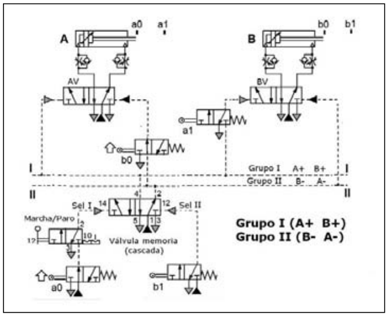
Método Paso a Paso
El método paso a paso, también denominado método de memoria de estado es otra metodología ampliamente utilizada para la implementación de sistemas secuenciales neumáticos.
Su enfoque se basa en utilizar elementos de memoria, normalmente válvulas biestables, para mantener el sistema en una etapa particular hasta que se cumpla una condición que permita avanzar al siguiente paso.
Es un método altamente lógico y preciso, y se adapta bien a sistemas con estructuras secuenciales claras y repetitivas.
A diferencia del método intuitivo o el método cascada, el método paso a paso se basa en la descomposición detallada de cada evento que ocurre en el ciclo del sistema. Es útil para diagramar, controlar y depurar sistemas secuenciales, especialmente cuando el orden exacto de los pasos es crucial para la operación segura y eficiente de la máquina.
Fundamentos
A diferencia del método de cascada, el paso a paso se caracteriza por avanzar linealmente por cada etapa de la secuencia, asegurando que solo un elemento esté activo a la vez.
Cada válvula biestable representa un estado del sistema. Al cumplirse una condición (generalmente el accionamiento de un sensor de posición), la válvula activa la siguiente etapa y desactiva la anterior, moviendo el sistema al siguiente paso de la secuencia.
De este modo, se garantiza un estricto control de la secuencia sin posibilidad de conflicto entre etapas.
Componentes principales
· Válvulas biestables (memorias): almacenan el estado actual del sistema y aseguran que solo una etapa esté activa a la vez.
· Sensores de fin de carrera: detectan la finalización de un movimiento y generan señales para activar la siguiente memoria.
· Cilindros actuadores: ejecutan las acciones físicas necesarias en cada etapa.
· Temporizadores o contadores (cuando se requiere): permiten tiempos de espera entre pasos o la ejecución cíclica controlada.
Pasos del Método Paso a Paso
1. Definir claramente la tarea o ciclo del sistema: Describir lo que debe hacer el sistema paso a paso. Identificar todos los elementos que intervienen (cilindros, sensores, válvulas, etc.). Establecer los movimientos deseados y el orden lógico en que deben ocurrir.
2. Establecer las posiciones iniciales de todos los actuadores: Determinar en qué posición deben comenzar los cilindros (retraídos o extendidos). Verificar que las condiciones iniciales son seguras para el operador y el sistema.
3. Elaborar el diagrama de espacio-fase (diagrama de movimientos): Representar gráficamente el desplazamiento de cada cilindro en el tiempo. Cada línea representa un actuador y sus posiciones (avance o retroceso).
4. Numerar cada paso de la secuencia de trabajo: Asignar un número a cada transición de movimiento (ej. A+, A-, B+, B-, etc.). Cada paso representa una condición o evento del sistema.
5. Asociar sensores o señales de fin de carrera a cada paso: Definir qué sensor activa el siguiente paso (por ejemplo, el fin de carrera del cilindro A al final de su avance). Garantizar que las señales sean confiables y estén bien ubicadas.
6. Diseñar el circuito neumático asociado: Utilizar válvulas adecuadas (3/2, 5/2, etc.) según el tipo de cilindro. Establecer la lógica de control usando componentes neumáticos o eléctricos según sea requerido.
7. Verificar las condiciones de seguridad: Incorporar válvulas de bloqueo o sistemas de paro de emergencia y asegurar que no haya movimientos peligrosos o inesperados.
8. Simular o probar la secuencia completa: Realizar una simulación manual o computacional del ciclo. Observar el comportamiento paso a paso y hacer ajustes si es necesario.
9. Documentar el sistema: Crear el diagrama neumático final con simbología normalizada. Registrar cada paso del ciclo con su condición de activación. Elaborar manuales o instructivos si se requiere para operación o mantenimiento.
10. Implementar y poner en marcha el sistema: Conectar todos los elementos físicos según el diseño. Verificar las conexiones, el suministro de aire y la lógica de control. Realizar pruebas finales bajo condiciones reales de operación.
Aplicaciones típicas
Este método es ideal para aplicaciones que requieren una secuencia estrictamente ordenada y donde no es necesario ejecutar movimientos en paralelo.
Se utiliza frecuentemente en estaciones de ensamblaje, prensas automáticas, sistemas de clasificación, y procesos de corte o inspección.
También es adecuado para sistemas educativos debido a su claridad lógica, facilidad de implementación, y utilidad pedagógica para comprender el concepto de automatización paso a paso.
Ejemplo y diagrama
Retomando la secuencia A+, B+, B-, A-, el método paso a paso utiliza una válvula biestable para cada paso:
[Inicio] → [M1 activa A+] → [Sensor A+] → [M2 activa B+] → [Sensor B+] → [M3 activa B-] → [Sensor B-] → [M4 activa A-] → [Sensor A-] → [Reinicio M1]
Cada memoria (Mx) se activa tras la confirmación del sensor correspondiente, garantizando una transición limpia entre pasos y evitando errores por activación prematura.
Este enfoque asegura una secuencia completamente controlada y predecible.
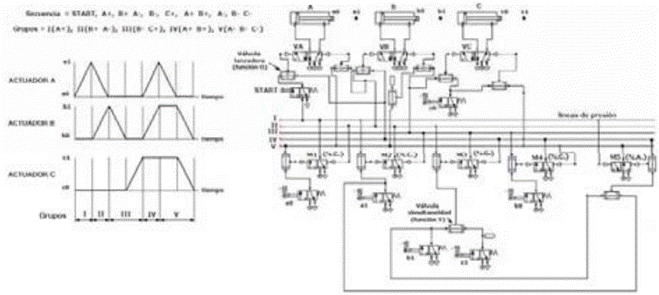
COMPARACIÓN ENTRE AMBOS MÉTODOS
|
Característica |
Método de Cascada |
Método Paso a Paso |
|
Estructura |
Modular por bloques |
Lineal por etapas |
|
Activación |
Por grupo de operaciones |
Una etapa a la vez |
|
Elemento de control |
Válvulas selectoras de grupo |
Válvulas biestables |
|
Facilidad de diagnóstico |
Alta (por grupos) |
Alta (por pasos) |
|
Flexibilidad de modificación |
Alta (modularidad) |
Media (linealidad) |
|
Complejidad del circuito |
Media-alta |
Baja-media |
|
Aplicaciones ideales |
Procesos con acciones paralelas |
Procesos lineales y secuenciales |
|
Costo de implementación |
Moderado a alto |
Bajo a moderado |
4.5 Construcción de circuitos neumáticos. Conexión y precauciones.
INTRODUCCIÓN
La construcción de circuitos neumáticos es una disciplina fundamental en la automatización industrial, ya que permite el control y operación de sistemas mecánicos mediante aire comprimido. Para su implementación, es esencial conocer los principios básicos de diseño, la selección de componentes, la conexión adecuada de los dispositivos y las precauciones necesarias para garantizar la seguridad y eficiencia del sistema.
DISEÑO Y PLANIFICACIÓN DE CIRCUITOS NEUMÁTICOS
El diseño de un circuito neumático comienza con la identificación de las necesidades del proceso en el que se aplicará. Se debe determinar la cantidad y tipo de actuadores requeridos, la presión de trabajo y los elementos de control necesarios. En esta fase, se utilizan diagramas de funcionamiento y esquemáticos neumáticos que permiten visualizar la secuencia de operación y las conexiones entre los componentes.
Uno de los métodos más utilizados para representar un circuito neumático es el diagrama espacio-fase, en el que se describe la interacción entre los actuadores y su secuencia de operación. Este diagrama es fundamental para prever el comportamiento del sistema antes de su implementación física.
ELEMENTOS DE UN CIRCUITO NEUMÁTICO
Un circuito neumático está compuesto por diversos elementos que cumplen funciones específicas. Entre los más importantes se encuentran:
1. Compresores: Son responsables de generar aire comprimido, el cual se almacena en tanques acumuladores y es tratado para eliminar impurezas y humedad antes de ser utilizado.
2. Válvulas direccionales: Controlan el flujo de aire en el sistema y permiten el movimiento de los actuadores. Pueden ser manuales, electromagnéticas o de accionamiento neumático.
3. Actuadores: Transforman la energía del aire comprimido en movimiento lineal o rotativo. Los más comunes son los cilindros de simple y doble efecto.
4. Elementos de control: Incluyen sensores, reguladores de presión y dispositivos de temporización que permiten la automatización del sistema.
5. Conectores y tuberías: Facilitan la distribución del aire comprimido a los distintos componentes del sistema.
CONEXIÓN Y CONFIGURACIÓN DE LOS COMPONENTES
La correcta conexión de los componentes en un circuito neumático es crucial para su funcionamiento eficiente. Algunas consideraciones importantes incluyen:
· Selección del tipo de válvulas y actuadores: Dependiendo de la aplicación, se eligen válvulas de 3/2, 5/2 o 5/3 vías, y actuadores de simple o doble efecto.
· Dimensionamiento adecuado de las tuberías y conexiones: Un diámetro insuficiente puede provocar caídas de presión y afectar el rendimiento del sistema.
· Implementación de unidades de mantenimiento: Como filtros, reguladores y lubricadores, que aseguran la calidad del aire comprimido y prolongan la vida útil de los componentes.
· Configuración de los controles lógicos: En circuitos avanzados, se pueden utilizar controladores lógicos programables (PLC) para gestionar la operación del sistema.
PRECAUCIONES
El manejo de aire comprimido puede ser peligroso si no se siguen las precauciones adecuadas. Algunas medidas de seguridad incluyen:
· Verificación de fugas: Las conexiones deben ser revisadas periódicamente para evitar pérdidas de aire y garantizar la eficiencia energética del sistema.
· Mantenimiento preventivo: Los filtros y reguladores deben limpiarse y reemplazarse regularmente para evitar obstrucciones y fallos en el sistema.
· Instalación de válvulas de seguridad: Para prevenir sobrepresiones que puedan dañar los componentes o provocar accidentes.
5. Electroneumática.
5.1 Conexión e interacción del equipo neumático con el PLC.
ELECTRONEUMÁTICA
La Electroneumática es un área tecnológica que se ocupa del estudio y la implementación de sistemas de control neumáticos utilizando energía eléctrica para la generación y transmisión de señales de mando.
En un sistema electroneumático, la energía eléctrica sustituye al aire comprimido como medio de control, aunque el aire comprimido se mantiene como la fuente de energía para realizar el trabajo físico.
La electricidad y la electrónica proporcionan una gran capacidad para la emisión, combinación, transporte y secuenciación de señales, lo que hace que los sistemas electroneumáticos sean extraordinariamente idóneos para soluciones complejas.
Los sistemas electroneumáticos están típicamente compuestos por dos circuitos interconectados:
1. Circuito Eléctrico (Mando o Control): Contiene la lógica o secuencia, incluyendo sensores, dispositivos de procesamiento (como relés o PLC) y las bobinas de las electroválvulas (solenoides).
2. Circuito Neumático (Potencia o Fuerza): Contiene los actuadores (cilindros o motores) y las válvulas direccionales, que convierten la energía neumática en movimiento mecánico.
CONEXIÓN ELÉCTRICA – NEUMÁTICA
Los sistemas electroneumáticos integran circuitos eléctricos de control con circuitos neumáticos de potencia.
En éstos, las salidas digitales del PLC energizan electroválvulas con piloto eléctrico, que dirigen el aire comprimido hacia los actuadores neumáticos (cilindros y motores).
En la práctica, cada electroválvula (de 3/2 ó 5/2 vías) tiene una bobina eléctrica cuyo campo magnético desplaza el émbolo de la válvula, abriendo o cerrando el paso de aire.
Los sensores eléctricos (pulsadores, finales de carrera, detectores de proximidad, presostatos) proporcionan señales al PLC indicando posiciones o presiones; los relevadores (relés) pueden usarse para agrupar o acondicionar esas señales; y las fuentes de alimentación alimentan todo el sistema.
Del lado neumático, se cuentan los actuadores (cilindros lineales y rotativos), válvulas direccionales (3/2 para mando simple, 5/2 para doble efecto, etc.), compresores y unidades de servicio (filtros, reguladores de presión, lubricadores) que suministran aire limpio y regulado, y medidores (manómetros) para monitorear la presión.
En resumen, los sensores convierten variables físicas en señales eléctricas de proceso, y los actuadores neumáticos convierten las órdenes eléctricas en movimiento mecánico.
El sistema electroneumático típico dibuja circuitos separados para la parte eléctrica (diagrama de escalera o esquema de contactos) y la parte neumática, pero operan coordinadamente: cuando el PLC cierra un contacto, se alimenta la bobina de una válvula solenoide, ésta pilota aire a un cilindro, y el aire comprimido realiza la tarea física programada.
Componentes eléctricos: Incluyen sensores, botones manuales e interruptores de límite como dispositivos de entrada, así como relevadores, solenoides y fuentes de alimentación
Componentes neumáticos: Se incluyen válvulas direccionales y actuadores neumáticos.
Estas partes son alimentadas por compresores y se conectan con reguladores de presión y medidores para controlar la velocidad y asegurar un funcionamiento óptimo.
CONEXIÓN E INTERACCIÓN DEL EQUIPO NEUMÁTICO CON EL PLC
La interacción entre el equipo neumático y el Controlador Lógico Programable (PLC) se realiza mediante electroválvulas (solenoides) y sensores.
Dispositivos de Interfase (I/O)
La interfaz de entrada/salida (I/O) es crucial para el acoplamiento entre el PLC y el mundo exterior.
La conexión se realiza a través de módulos de entrada y salida discretos que acondicionan y aíslan eléctricamente las señales.
1. Entradas (Inputs): Los sensores neumáticos (finales de carrera mecánicos, sensores magnéticos de posición) detectan las condiciones del proceso (como la posición del vástago de un cilindro) y envían señales eléctricas al módulo de entrada del PLC.
2. Salidas (Outputs): Las solenoides de las válvulas direccionales son los dispositivos de salida del PLC. Cuando la lógica del programa requiere un movimiento, el PLC activa la bobina (solenoide) a través de un módulo de salida, lo que a su vez selecciona la posición de la válvula neumática.
Tipos de Válvulas Direccionales (Electroválvulas)
Las válvulas direccionales con piloto eléctrico son el principal elemento de control en un circuito electroneumático.
|
Tipo de Válvula |
Pilotaje |
Función / Característica |
Memoria |
|
Monoestable |
Solenoide en una posición y retorno por resorte en la otra. |
Mantiene la posición solo mientras el piloto eléctrico esté energizado. |
No |
|
Biestable |
Solenoide en ambas posiciones. |
Mantiene la posición hasta que se activa la solenoide opuesta (pulso momentáneo es suficiente). |
Sí (Memoria Mecánica) |
|
Tres Posiciones |
Solenoide en los extremos, con centrado por resorte. |
Permite una posición central de reposo (posición cero). |
No |
5.2 Funcionamiento del equipo.
FUNCIONAMIENTO GENERAL
El funcionamiento general del sistema electroneumático es el siguiente: el PLC ejecuta la lógica de control y emite señales eléctricas (24V DC típicamente) hacia las electroválvulas.
Al recibir la señal, la válvula pilotada cambia de posición (por ejemplo, un 5/2 cambia su alojamiento interno), dirigiendo aire desde la presión de suministro al lado adecuado del cilindro.
El cilindro responde extendiéndose o retrayéndose, realizando trabajo (empujar, sujetar, transportar). Cuando cesa la señal eléctrica, las electroválvulas vuelven a reposo (por resorte o señal inversa). De este modo, la energía eléctrica controla las señales de mando y el aire comprimido realiza el esfuerzo mecánico.
Ejemplos industriales incluyen máquinas de ensamblaje donde un PLC detecta la presencia de una pieza y activa una electroválvula para extender un cilindro que inserta un componente; o líneas de empaque donde cilindros neumáticos movidos por señal eléctrica suben y bajan tapas o etiquetas.
En todos los casos, la rápida conducción de la señal eléctrica permite ciclos de trabajo ágiles, mientras que el aire comprimido entrega la fuerza necesaria. Estos sistemas son altamente eficaces en la automatización industrial, permitiendo secuencias lógicas complejas mediante PLC o relevadores.
FUNCIONAMIENTO DEL EQUIPO
El funcionamiento de un sistema electroneumático se basa en la conversión y el control de la energía entre los circuitos eléctrico y neumático.
Componentes Neumáticos (Fuerza)
La fuerza o el trabajo es realizado por los actuadores neumáticos (cilindros o motores).
• Actuadores Lineales (Cilindros): Transforman la energía neumática en movimiento lineal. Se distinguen los de simple efecto (retorno por resorte) y doble efecto (fuerza en ambos sentidos).
• Elementos de Ganancia: Son válvulas de control de flujo variable (unidireccional o bidireccional) que controlan la velocidad de desplazamiento de los actuadores.
o Control de Velocidad por Salida de Aire: Es el método preferido. El aire de alimentación entra libremente, pero se estrangula el aire de escape de la cámara, lo que uniformiza la fuerza opuesta al movimiento, favoreciendo un desplazamiento suave y uniforme.
Ecuaciones Básicas de Fuerza
La fuerza generada por un cilindro de doble efecto está determinada por la presión del aire y el área efectiva del pistón.
|
Movimiento |
Ecuación de Fuerza Teórica |
|
Extensión |
|
|
Retracción |
Donde es el diámetro del pistón, es el diámetro del vástago, y es la presión de operación. (Nota: es un coeficiente de fricción que a menudo se aplica en cálculos más precisos).
El factor más importante en la selección de las válvulas es su capacidad de caudal ( o ), que indica la resistencia de la válvula al flujo de aire.
5.3 Control del equipo neumático mediante programas de PLC.
LÓGICA SECUENCIAL Y ELEMENTOS PROGRAMABLES
Los autómatas programables (PLC) implementan la lógica de control de los sistemas neumáticos mediante programas de escalera (Ladder).
Cada escalera representa conexiones virtuales: los contactos corresponden a entradas (sensores) y las bobinas a salidas (solenoides).
Por ejemplo, para un cilindro con sensor de final de carrera, el contacto del sensor queda en serie o paralelo en el esquema. Además de AND/OR básicos, los PLC ofrecen bloques especiales para temporización y conteo.
En Ladder se usan temporizadores on-delay u off-delay para temporizar movimientos, y contadores ascendentes/descendentes para contar eventos (p.ej. piezas pasadas).
Estas funciones avanzadas se integran en el lenguaje del PLC según la norma IEC 61131-3.
En la práctica, un programa Ladder típico posee renglones (rungs) numerados que se evalúan de arriba abajo: cuando un sensor detecta (TRUE) se cierra su contacto en el diagrama, el PLC energiza la bobina asociada a la electroválvula correspondiente, y así se activa el actuador.
Si la lógica requiere un retardo, el temporizador genera esa demorada antes de energizar la salida.
Por ejemplo, se puede programar: “activar cilindro A (salida Y0) cuando sensor X1 se active, pero solo después de 500 ms” (lo cual se logra con un temporizador TON en Ladder).
Así, los PLC coordinan múltiples salidas secuencialmente, respondiendo a sensores e interrupciones, e integran contadores para operaciones repetitivas (p.ej. alimentar 10 ciclos y luego detenerse).
Además, los PLC incorporan contadores digitales.
Por ejemplo, se puede usar un contador ascendente (CTU) que al recibir señal de un interruptor final incrementa su valor; al llegar a un valor predefinido activa una salida.
De este modo, se cuenta cuántas veces se accionó un cilindro antes de, por ejemplo, un proceso de mantenimiento preventivo.
En suma, los PLC implementan la lógica secuencial en Ladder combinando contactos, bobinas, temporizadores y contadores, de modo que “las salidas son obtenidas después del procesamiento [de los sensores] para activar solenoides” que controlan los cilindros.
Este control programable reemplaza la antigua lógica por relés, ofreciendo mayor flexibilidad.
CONTROL DEL EQUIPO NEUMÁTICO MEDIANTE PROGRAMAS DE PLC
El PLC es el elemento central del control en los sistemas electroneumáticos, reemplazando la lógica de relés (lógica cableada).
El control se implementa mediante la programación de lógica de contactos (Ladder/Diagrama Escalera).
Lenguajes de Programación y Lógica
Los lenguajes estandarizados (IEC 61131) incluyen el Diagrama de Lógica de Contactos (LADDER/LD) y la Lista de Instrucciones (IL).
Diagrama de Lógica de Contactos: Es la técnica más utilizada. Representa la lógica mediante contactos (entradas) y bobinas (salidas) dispuestos en "escalones" o "rungs".
· Contactos (Entradas): Representan dispositivos externos (sensores, interruptores). Pueden ser Normalmente Abierto (NA) o Normalmente Cerrado (NC).
· Bobinas (Salidas): Representan las solenoides de las electroválvulas.
Ecuaciones y Operaciones Lógicas
La lógica de control se basa en el Álgebra de Boole (operaciones AND, OR, NOT), que se traduce directamente a los circuitos de contactos.
|
Operación Lógica |
Implementación en Lógica de Contactos |
Ecuación |
|
Multiplicación (AND) |
Conexión en serie de contactos. |
|
|
Suma (OR) |
Conexión en paralelo de contactos. |
|
|
Negación (NOT) |
Contacto normalmente cerrado (NC). |
La ecuación lógica de una salida () es la suma (OR) de los términos que la activan, donde cada término es una multiplicación (AND) de las condiciones de entrada.
5.4 Implementar diversos ciclos de trabajo.
DIAGRAMAS ESPACIO-FASE/ESPACIO-TIEMPO.
Cada ciclo puede incluir múltiples actuadores interactuando de manera sincronizada mediante el control de válvulas direccionales.
Los diagramas permiten observar fallas y optimizar el diseño.
Para diseñar y analizar secuencias complejas con varios actuadores, se utilizan diagramas espacio-fase y espacio-tiempo.
Un diagrama espacio-fase representa los ciclos de funcionamiento de cada actuador en función de las fases de la secuencia, sin considerar la escala temporal.
Cada fase es un cambio de estado de algún elemento del circuito.
En la gráfica, en el eje horizontal (abscisas) se listan las fases (A+, A–, B+, etc.) y en el eje vertical cada actuador (cilindro A, cilindro B, etc.)
Por ejemplo, en una secuencia donde un cilindro A extiende (fase A+) y luego retorna (A–), se dibuja una banda de señal que sube de 0 a 1 en la columna de A+ y baja en A–.
Así, se visualiza claramente qué actuadores deben moverse en cada etapa secuencial.
Un diagrama espacio-tiempo extiende esta idea incluyendo la dimensión temporal: a cada fase se le asigna una duración, y el diagrama muestra cuándo (en el eje de tiempo) ocurre cada movimiento.
Por ejemplo, los rectángulos de fase pueden alargarse proporcionalmente al tiempo requerido.
Esto permite identificar solapamientos o tiempos muertos entre actuadores, facilitando la detección de fallas (un actuador que no alcanza tiempo suficiente) y la optimización de ciclos (ajustar retardos o solapamientos).
En la práctica, se dibuja la fase de cada actuador a lo largo de un eje horizontal de tiempo.
Estos diagramas ayudan a validar el diseño secuencial: si alguna señal de control no coincide temporalmente, se puede reprogramar el Ladder o ajustar temporizadores.
En resumen, los diagramas espacio-fase clarifican la secuencia fase por fase, y los espacio-tiempo incorporan el cronograma real, sirviendo como herramienta de verificación y optimización del proceso.
IMPLEMENTAR DIVERSOS CICLOS DE TRABAJO
Los ciclos de trabajo se refieren a las secuencias (o sucesiones de movimientos) que deben ejecutar los actuadores. Estos sistemas son generalmente secuenciales y pueden ser asíncronos o síncronos.
Control Secuencial Básico
Un ciclo básico requiere que las salidas dependan de las entradas actuales y de los estados anteriores (memoria).
Paro y Arranque: El sistema secuencial más sencillo. El motor se mantiene encendido después de la activación inicial (memoria) hasta que se pulsa el paro.
Secuenciación por Estados: La secuencia se define por estados, donde los sensores (fines de carrera) actúan como la señal de transición para pasar al siguiente movimiento.
Metodologías para Ciclos Complejos
Para implementar ciclos complejos con PLCs de manera robusta y sistemática, se utilizan métodos que manejan la memoria o la temporización.
1. Método de la Memoria Interna (ME/MI): Se aplica en sistemas secuenciales asíncronos (no dependen de un reloj).
· Se genera una memoria interna (relevador interno) por cada estado o cambio de estado de la secuencia.
· La memoria sirve para recordar el estado anterior y para condicionar el encendido de la siguiente memoria en la secuencia.
· La tabla de estados (o tabla natural del proceso) es la herramienta fundamental para definir la lógica secuencial.
· La ecuación de cada memoria es una función lógica que la mantiene encendida hasta que la memoria siguiente se activa.
2. Método de Temporizadores en Cascada (TC): Se utiliza para sistemas donde el tiempo de retardo (retardos de tiempo) es parte de la secuencia.
· Los temporizadores (TON) se activan de manera secuencial (en cascada).
· La memoria es implementada al mantener las bobinas de los temporizadores energizadas después de haber terminado de contar su valor preestablecido, hasta que el ciclo de operación finaliza (usando un contacto NC del último temporizador).
· El tiempo de ciclo total () es la suma de los valores preestablecidos de todos los temporizadores en la línea principal.
Donde es el valor preestablecido del temporizador , y es el número de temporizadores.
Funciones de Tiempo y Conteo
Las funciones de tiempo (temporizadores) y conteo (contadores) son funciones esenciales del PLC para implementar ciclos de trabajo.
Temporizadores (Timers):
· TON (Time On-Delay): Retarda el encendido de una salida. Es el más común.
· TOF (Time Off-Delay): Retarda el apagado de una salida.
· TONR (Retentive TON): Mantiene el valor acumulado del tiempo, incluso si se interrumpe la alimentación, requiriendo un comando de RESET.
Contadores (Counters): Se usan para tareas repetitivas o para contar eventos.
· CTU (Count Up): Cuenta ascendentemente hasta un valor preestablecido.
· CTD (Count Down): Cuenta descendentemente desde un valor preestablecido hasta cero.
· CTUD (Up/Down): Combina ambas funciones.
La salida se activa cuando se alcanza la condición (PV ACC, o ACC = 0).
Nota: El formato de direccionamiento específico (p. ej., rack/slot o tag-based) y la sintaxis de las instrucciones varían entre fabricantes como Allen-Bradley (SLC 500 o ControlLogix) y Siemens (S7-200), aunque los conceptos de la lógica de contactos son universales.
6. Bibliografía.
Soria Tello, S. (2013). Sistemas automáticos industriales de eventos discretos. Alfaomega Grupo Editor.
Stenerson, J. (2002). Industrial automation and process control. Prentice Hall.